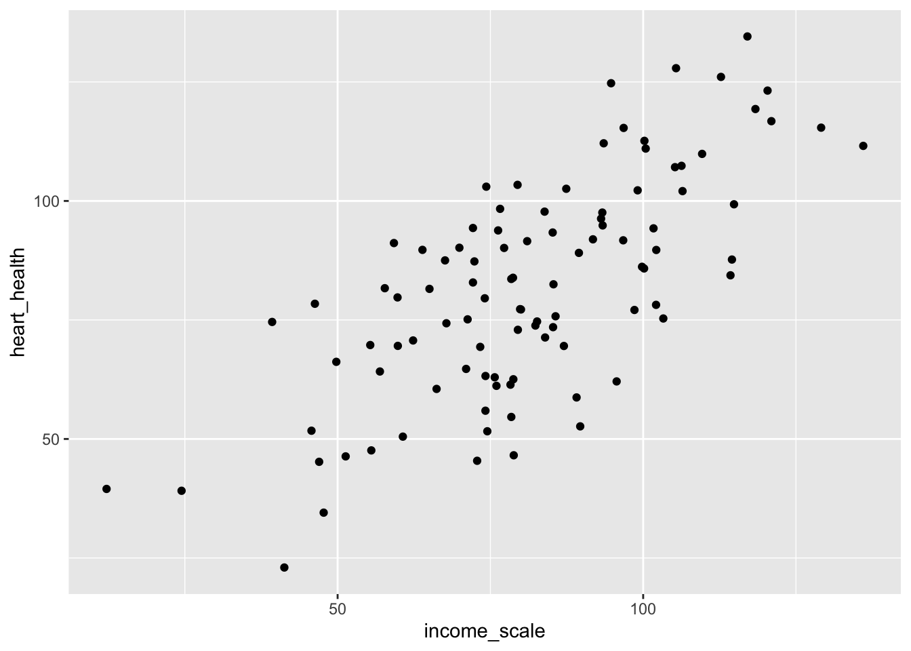
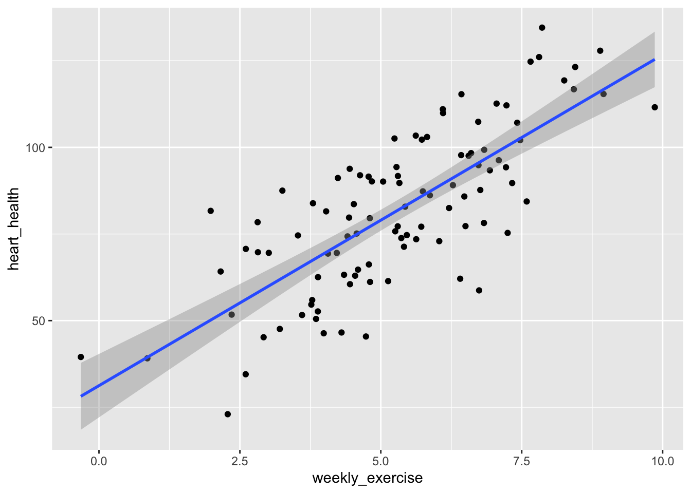

The hat (^) are indicators of a sample data not the true population estimate.
Y: dependent, outcome variable
X: independent, explanatory variable
𝜶 and β: are the parameter estimates
𝜶 : The predicted value of Y when X= 0 (intercept)
β: how much Y changes for a one-unit increase in X (slope)
We use linear regressions to estimate how x changes are y! Therefore, how we interpret the estimate, β, is determined by whether our x value is a categorical or continuous variable.
Here is the formula to Interpreting Regressions:
Continuous Variable -> Look at the slope!
When X increases 1 unit, Y increases by 𝛽
Usually, you can ignore the intercept The intercept is the average value of Y when X =0.
Dummy/Categorical Variable -> Compare it with the baseline category (aka intercept)
When X is in the given category, average Y value is higher by 𝛽 compared to the average Y value for baseline X.
The intercept is the average Y value for the baseline category.
Type
Approach
Interpetation
Continious
A one unit increase in X, SLOPE unit change in Y.
For every ___ (replace with unit value) increase in ___ (replace with X value) results in ___ (replace with estimate/slope) unit change in ___ (replace with Y, or outcome value)
Categorical
The category is SLOPE unites higher/lower than the intercept.
The ___ (replace with categorical value) is ___ (replace with estimate/slope) higher/lower than ___ (replace with baseline/intercept)
The function to calculate this in R is: lm()
Example:
I will be using the same randomly generated data as the correlations examples.
library(tidyverse)
── Attaching core tidyverse packages ──────────────────────── tidyverse 2.0.0 ──
✔ dplyr 1.1.4 ✔ readr 2.1.5
✔ forcats 1.0.0 ✔ stringr 1.5.1
✔ ggplot2 3.5.2 ✔ tibble 3.3.0
✔ lubridate 1.9.4 ✔ tidyr 1.3.1
✔ purrr 1.1.0
── Conflicts ────────────────────────────────────────── tidyverse_conflicts() ──
✖ dplyr::filter() masks stats::filter()
✖ dplyr::lag() masks stats::lag()
ℹ Use the conflicted package (<http://conflicted.r-lib.org/>) to force all conflicts to become errors
set.seed(123)age <-sample(18:100, 100, replace =TRUE)gender <-sample(c(1, 0), 100, replace =TRUE) # 1 = Female, 0 = Malekids <-sample(0:5, 100, replace =TRUE)# Now build the data.frame with dependent vars defined inlinedata <-data.frame(age = age,gender = gender,height =rnorm(100, mean =5.5, sd =0.75) + gender *-0.25,kids = kids,income =rnorm(100, mean =45000, sd =10000) + age *1000+ gender * (-2000) + kids * (-3000),years_edu =sample(10:23, 100, replace =TRUE) + age *1+ gender *2)head(data)
First, we will doing a simple linear regression with only one X value. Y is our outcome variable and X is our explantory variable. it will look like the following:
Call:
lm(formula = height ~ gender, data = data)
Residuals:
Min 1Q Median 3Q Max
-1.40414 -0.47142 -0.07808 0.44609 1.70882
Coefficients:
Estimate Std. Error t value Pr(>|t|)
(Intercept) 5.51099 0.09734 56.616 <2e-16 ***
gender -0.17425 0.14352 -1.214 0.228
---
Signif. codes: 0 '***' 0.001 '**' 0.01 '*' 0.05 '.' 0.1 ' ' 1
Residual standard error: 0.7153 on 98 degrees of freedom
Multiple R-squared: 0.01482, Adjusted R-squared: 0.004766
F-statistic: 1.474 on 1 and 98 DF, p-value: 0.2276
Our estimate, how much x changes y, is -0.17, and our baseline, Male’s height, is 5.51 feet, which we can interpret as the following:
Men are on average 5.51 feet high, and women are on average 0.17 feet shorter than Men.
However, we can not say according to our data that gender is correlated with height, since according to our P-value column, our p-value is 0.228, which is more than 0.05.
Call:
lm(formula = income ~ age, data = data)
Residuals:
Min 1Q Median 3Q Max
-28480.3 -7731.4 436.7 7645.8 30540.6
Coefficients:
Estimate Std. Error t value Pr(>|t|)
(Intercept) 34967.79 3405.90 10.27 <2e-16 ***
age 1045.02 53.15 19.66 <2e-16 ***
---
Signif. codes: 0 '***' 0.001 '**' 0.01 '*' 0.05 '.' 0.1 ' ' 1
Residual standard error: 12550 on 98 degrees of freedom
Multiple R-squared: 0.7977, Adjusted R-squared: 0.7957
F-statistic: 386.5 on 1 and 98 DF, p-value: < 2.2e-16
We want to look at the column with the estimate first, this tells us our intercept and estimate.
Our estimate, how much x changes y, is 1045.02, and our intercept is 34,967.79, which we can interpret as the following:
At 18 years old (which is the lowest age we have), income is 34,967.79, and for every year older, an individuals income increases by 1045.02 dollars.
In additon, we can say according to our data that age is correlated with income, since according to our P-value column, our p-value is <2e-16, which is less than 0.05.
In addition you can see *** after our p-value, this tells us the level of significance, the more stars the stronger the significance.
Multivariate Linear Regressions
Now, we have just been looking at one explanatory variable, however, you may want to look are more than one and also consider that there maybe outside influence that you need to control for.
Furthermore, you may want to add more x variables. To do this, you can do the following:
lm(y ~ x1 + x2 + x3 + ... + xn , data)
Now, lets look at an example, but first, lets make some random generated data real quick!
# What if we have a confounding variable?# This will be our confounding variableweekly_exercise <-rnorm(100,5,2)# lets make our new dataframedf_confound <-tibble(income_scale = (rnorm(100,30000,10000) +10000*weekly_exercise)/1000,age =rnorm(100,35,10),# this is another function that creats a binary variable based on probability female =rbinom(100,1,.5),heart_health =60+10*weekly_exercise -1*age +8*female +rnorm(100,0,10))# regression modelmodel3 <-lm(heart_health ~ income_scale + age + female, df_confound)summary(model3)
Call:
lm(formula = heart_health ~ income_scale + age + female, data = df_confound)
Residuals:
Min 1Q Median 3Q Max
-25.394 -8.562 -0.513 8.813 36.603
Coefficients:
Estimate Std. Error t value Pr(>|t|)
(Intercept) 51.69599 6.64099 7.784 8.10e-12 ***
income_scale 0.72808 0.05986 12.162 < 2e-16 ***
age -0.91499 0.12930 -7.077 2.41e-10 ***
female 7.54097 2.80779 2.686 0.00853 **
---
Signif. codes: 0 '***' 0.001 '**' 0.01 '*' 0.05 '.' 0.1 ' ' 1
Residual standard error: 13.21 on 96 degrees of freedom
Multiple R-squared: 0.68, Adjusted R-squared: 0.67
F-statistic: 67.99 on 3 and 96 DF, p-value: < 2.2e-16
# visualdf_confound |>ggplot(aes(x = income_scale, y = heart_health)) +geom_point()

Okay! There is something wrong with this model yes? We know income scale doesn’t actually impact heart health, rather this is done through weekly exercise! To take this into account we can do the following:
model.fix <-lm(heart_health ~ weekly_exercise + income_scale + age + female,df_confound)summary(model.fix)
Call:
lm(formula = heart_health ~ weekly_exercise + income_scale +
age + female, data = df_confound)
Residuals:
Min 1Q Median 3Q Max
-24.8789 -7.5206 -0.6986 7.2529 25.7713
Coefficients:
Estimate Std. Error t value Pr(>|t|)
(Intercept) 61.75064 5.56561 11.095 < 2e-16 ***
weekly_exercise 9.62967 1.34813 7.143 1.84e-10 ***
income_scale 0.01537 0.11096 0.139 0.89
age -1.01886 0.10584 -9.626 1.04e-15 ***
female 9.36947 2.29096 4.090 9.04e-05 ***
---
Signif. codes: 0 '***' 0.001 '**' 0.01 '*' 0.05 '.' 0.1 ' ' 1
Residual standard error: 10.71 on 95 degrees of freedom
Multiple R-squared: 0.7918, Adjusted R-squared: 0.783
F-statistic: 90.32 on 4 and 95 DF, p-value: < 2.2e-16
df_confound |>ggplot(aes(x=weekly_exercise,y = heart_health)) +geom_point()+# lets add a line based on using a linear regressiongeom_smooth(method ="lm")
`geom_smooth()` using formula = 'y ~ x'

Now, income is no longer correlated!
Prediction
We can also use linear regressions to make predictions. Using the crossing() and augment() functions, we can predict an outcome using our new models.
Lets use our model from our last example. In the crossing function we put our values from our hypothetical person, and then using the augment function it calculates our predicted heart health from our values and our model.
#install.packages("broom")library(broom)model <-lm(heart_health ~ weekly_exercise + age + female,df_confound)summary(model.fix)
Call:
lm(formula = heart_health ~ weekly_exercise + income_scale +
age + female, data = df_confound)
Residuals:
Min 1Q Median 3Q Max
-24.8789 -7.5206 -0.6986 7.2529 25.7713
Coefficients:
Estimate Std. Error t value Pr(>|t|)
(Intercept) 61.75064 5.56561 11.095 < 2e-16 ***
weekly_exercise 9.62967 1.34813 7.143 1.84e-10 ***
income_scale 0.01537 0.11096 0.139 0.89
age -1.01886 0.10584 -9.626 1.04e-15 ***
female 9.36947 2.29096 4.090 9.04e-05 ***
---
Signif. codes: 0 '***' 0.001 '**' 0.01 '*' 0.05 '.' 0.1 ' ' 1
Residual standard error: 10.71 on 95 degrees of freedom
Multiple R-squared: 0.7918, Adjusted R-squared: 0.783
F-statistic: 90.32 on 4 and 95 DF, p-value: < 2.2e-16
scen <-crossing(weekly_exercise =10, age =35, female =1)augment(model, newdata = scen)
# A tibble: 1 × 4
weekly_exercise age female .fitted
<dbl> <dbl> <dbl> <dbl>
1 10 35 1 134.